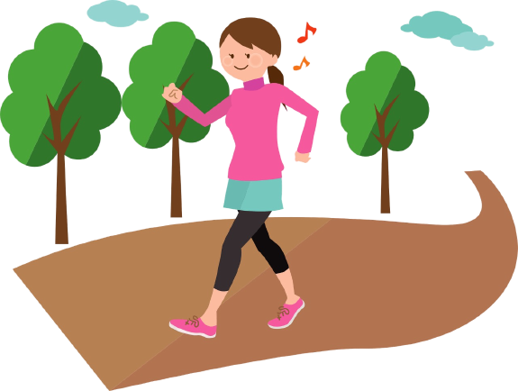
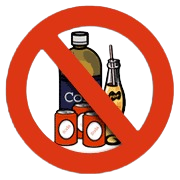
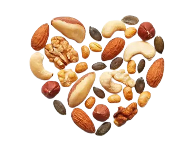

Fitness Activity
Take a 10-minute walk: If you don't exercise at all, a brief walk is a great way to start. If you do, it's a good way to add more exercise to your day.
Give yourself a lift: Lifting a hardcover book or a two-pound weight a few times a day can help tone your arm muscles. When that becomes a breeze, move on to heavier items or join a gym.
Eat one extra fruit or vegetable a day: Fruits and vegetables are inexpensive, taste good, and are good for everything from your brain to your bowels.
Make breakfast count:Start the day with some fruit and a serving of whole grains, like oatmeal, bran flakes, or whole-wheat toast.
Stop drinking your calories: Cutting out just one sugar-sweetened soda or calorie-laden latte can easily save you 100 or more calories a day. Over a year, that can translate into a 10-pound weight loss.
Have a handful of nuts: Walnuts, almonds, peanuts, and other nuts are good for your heart. Try grabbing some instead of chips or cookies when you need a snack, adding them to salads for a healthful and tasty crunch, or using them in place of meat in pasta and other dishes.
Breathe deeply:Try breathing slowly and deeply for a few minutes a day. It can help you relax. Slow, deep breathing may also help lower blood pressure.